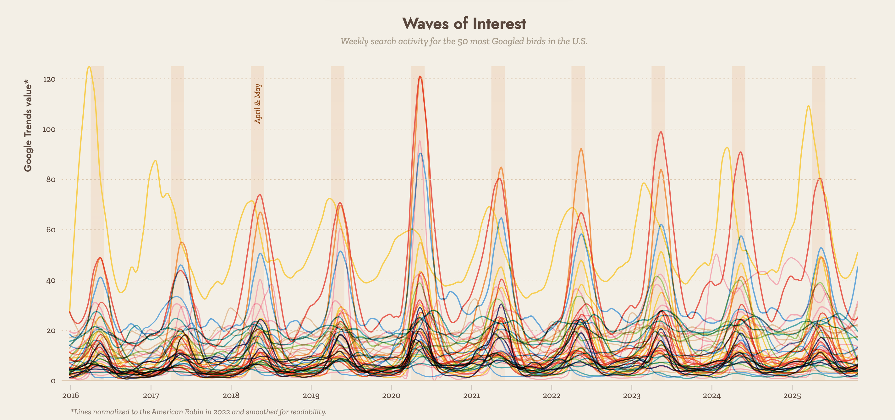
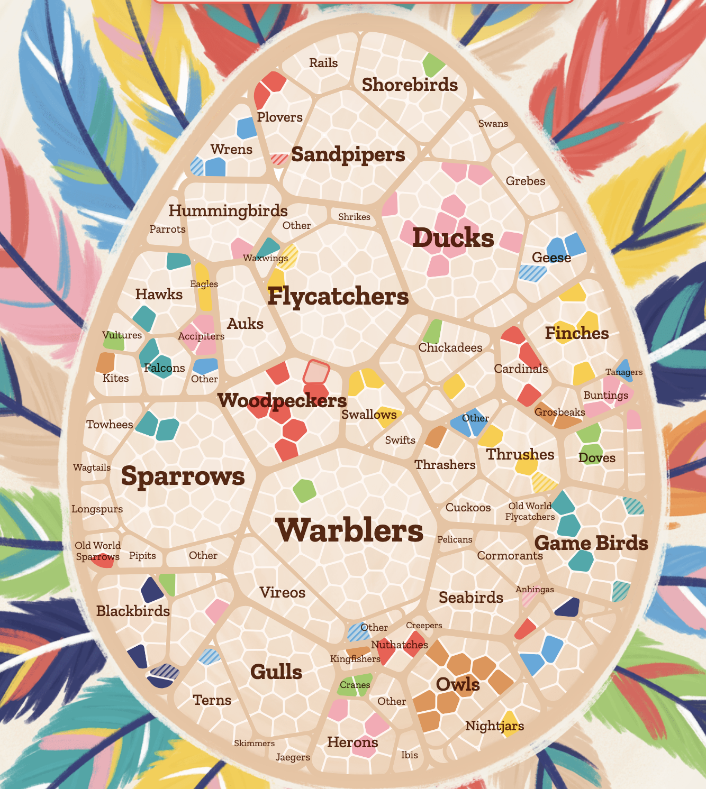
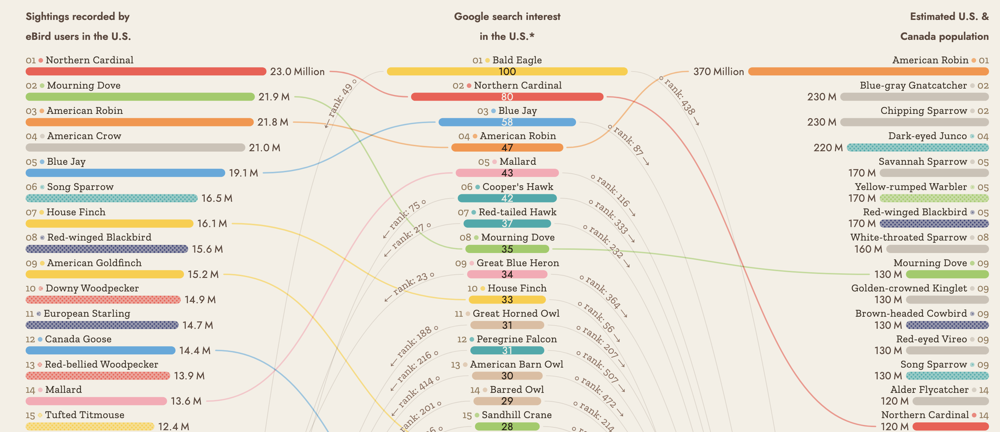

Searching for Birds – Critical Data Visualization Analysis
Visualization Source:
Searching for Birds
Purpose
The purpose of this visualization is to explore how public interest in
birds is reflected through Google search behavior. It connects human
curiosity with real-world bird species, showing which birds people
search for, when they search for them, and how interest varies
geographically and seasonally.
Data
The visualization primarily uses Google Trends data, which measures
relative search interest over time. This is combined with bird-related
datasets such as species classification and observational data from
sources like eBird.
The data is collected from:
- Google search queries (aggregated and normalized)
- Bird species databases (taxonomy and classification)
- Observation datasets (e.g., bird sightings)
Because Google Trends data is normalized, it does not represent absolute
search volume but rather relative popularity.
Target Users
This visualization is designed for a broad audience:
- General public exploring interesting data stories
- Bird enthusiasts and hobbyists
- Students and educators
- Data visualization designers and researchers
Questions & Insights
Users can explore and answer several questions using this visualization:
- Which bird species are most searched in the U.S.?
- How does search interest change over time?
- Which birds are popular in different regions?
- Do seasonal patterns affect search behavior?
These questions are answered through interaction:
- Hovering reveals detailed data about specific birds
- Scrolling progresses through a narrative story
-
Zooming into visual elements (like the “egg” structure) reveals deeper
levels of detail
Example Insights
-
Search interest peaks during migration seasons (spring and fall)

- Rare birds generate spikes in search activity
-
Large or visually striking birds (eagles, hawks) dominate search
trends
- Only a subset of bird species receive significant attention
Design & Interaction Analysis
What Works Well
-
Storytelling approach makes complex data engaging and easy to follow
- Creative visuals (eggs, nests) make the visualization memorable
- Hover and zoom interactions encourage exploration
- Smooth transitions guide users through the narrative



What Could Be Improved
-
The artistic design can sometimes reduce clarity for first-time users
- Heavy reliance on scrolling may make navigation slower
-
Some interactions are not immediately obvious (discoverability issue)
Improvements could include adding clearer instructions, a
mini-map/navigation bar, and optional simplified views for users who
prefer traditional charts.
Limitations
-
Google Trends data does not represent actual bird populations or
sightings
-
Search terms may be ambiguous (e.g., bird names used in other
contexts)
- Limited to users who actively interact with the visualization
- Not designed for precise quantitative analysis
The visualization is more effective as an exploratory storytelling tool
rather than a precise analytical dashboard.